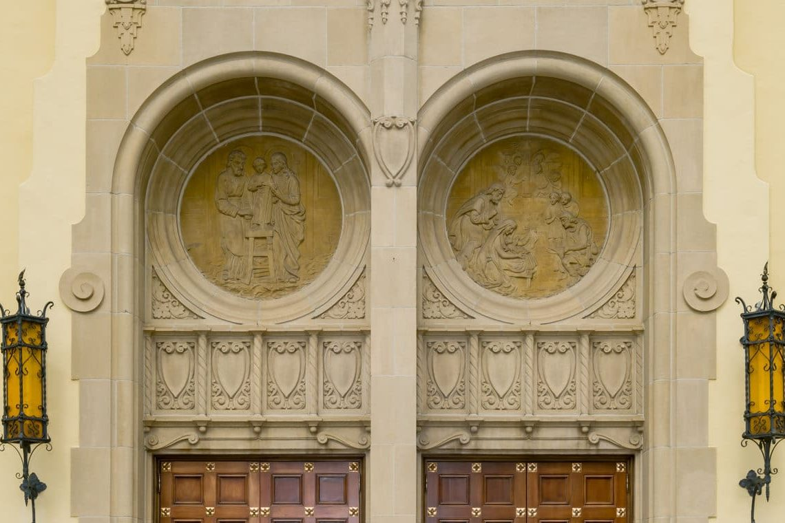

Our Ministry
“Thus the home is the first school of Christian life and ‘a school for human enrichment.’ Here one learns endurance and the joy of work,fraternal love, generous – even repeated -forgiveness, and above all divine worship in prayer and the offering of one’s life” (CCC 1656-1657).
“My inspiration for becoming a priest was the pastor that I grew up with, Bishop Joe Sartoris. He made a tremendous impact in my life and remains one of my heroes to this very day.”
Fr. Ricky ViverosPastor
Born: Torrance, CA
Education:
St. Margaret Mary School, Lomita Bishop Montgomery HS, Torrance
LA Harbor College
Long Beach State (B.A. in history)
Prior occupations:
Disney Store
Long Beach USD
Home parish: St. Margaret Mary, Lomita.
Transitional Diaconate:
St. Margaret Mary
St. Anthony, Long Beach.
First Mass as priest:
June 1, 9:30 a.m
St. Margaret Mary.
First Assignment:
St. Genevieve, Panorama City
Greetings From Ericka, Director of Religious Education
Welcome to our pages dedicated to children and their families, the first community where the Lord gathers us, forms us, and acts in the world. Faith Formation for Children extends support to the Domestic Church, the Christian household, helping to form their children as disciples of Jesus Christ.
Our volunteer catechists strive to be missionary disciples who live the faith they profess to your children and help others respond to the gospel message.
In order to continue the important work of passing on our faith tradition to the next generation, we offer classes for children and monthly faith-building activity centered on the family.
As partners, our Catechists and Faith Formation Leaders serve so that children and families will grow in their relationship with Jesus Christ, become engaged members of our parish community, giving of themselves to the needs of others to build God’s Kingdom on earth.
Blessings,
Ericka Giordano